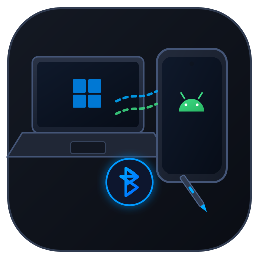
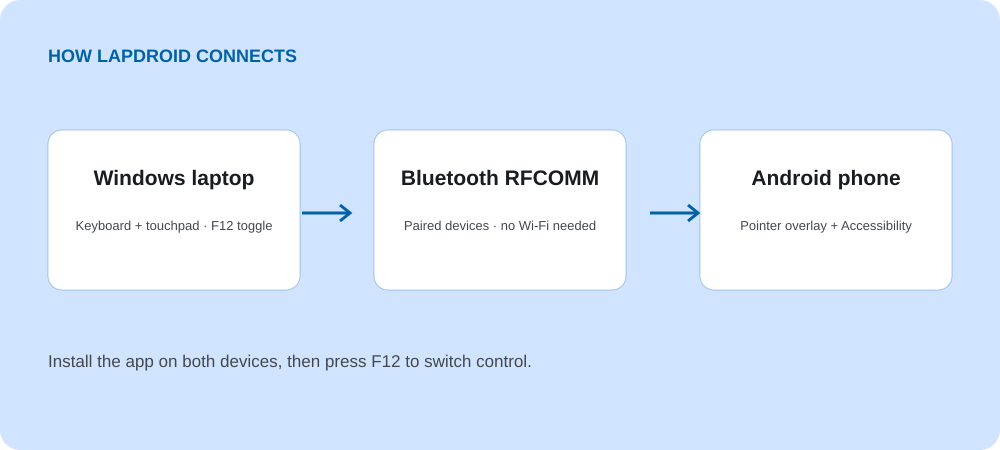

Type and point from your laptop
Use your laptop keyboard to type on the phone and your touchpad to move its on-screen pointer.

LapdroidWindows + Android · Bluetooth
Control your Android phone with your Windows laptop’s keyboard and touchpad. Type messages, tap, drag, and scroll over Bluetooth—no Wi-Fi needed.
Install the app on both devices, then press F12 to switch control.

Use your laptop keyboard to type on the phone and your touchpad to move its on-screen pointer.
Left-click to tap, right-click to go Back, and middle-click to go Home. Use your touchpad to scroll through pages.
The two apps connect directly over Bluetooth RFCOMM. The Android app doesn’t ask for Internet access.
Get started
Windows 10 or 11, Android 8.0 or later, Bluetooth on both devices, and both Lapdroid companion apps. Android overlay and Accessibility permissions are required for pointer display and input control.
If the pointer or typing doesn’t work, check the Android permissions first. Download the APK for your phone; the AAB is for store publishing. Bluetooth behavior can vary between devices.
How it works
Made by Silviu Vlasceanu
If Lapdroid is useful to you, you can leave a tip on Ko-fi. Thanks for supporting my work. Bug reports and contributions help too.